some of my albums of all time (by year i listened to them most/the year they remind me of), my favourite tracks on the album, things they make me feel/remind me of
in no particular order, forever a wip
so i don't forget
2024: boa
2023: lana del rey, father john misty, hozier, chase atlantic, central cee, the killers, bakar, ethel cain, steve lacy, declan mckenna, billie eilish
2022: the 1975, halsey, willow, ashnikko, arrdee, lovejoy
current live music wishlist: muse, grimes, sufjan stevens, chappell roan
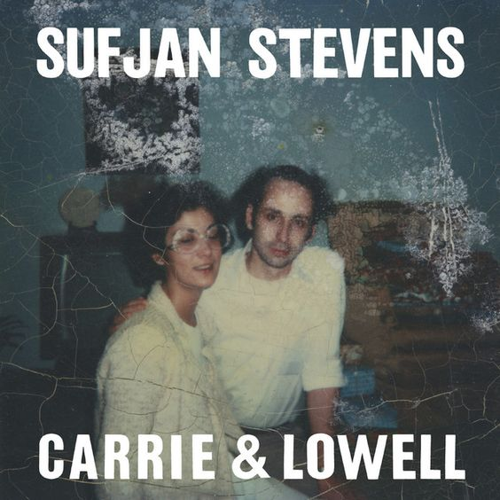
1. fourth of july
2. death with dignity
3. should have known better
4. the only thing
overawareness of the delicate nature of life, reading through genius annotations, transcendence and questioning, minimalistically raw and beautiful instrumentals and vocals
a dreamlike performance of carrie & lowell i discovered: https://youtu.be/9FX34TjJe-c?si=zClZQbQpij2Pv7YZ
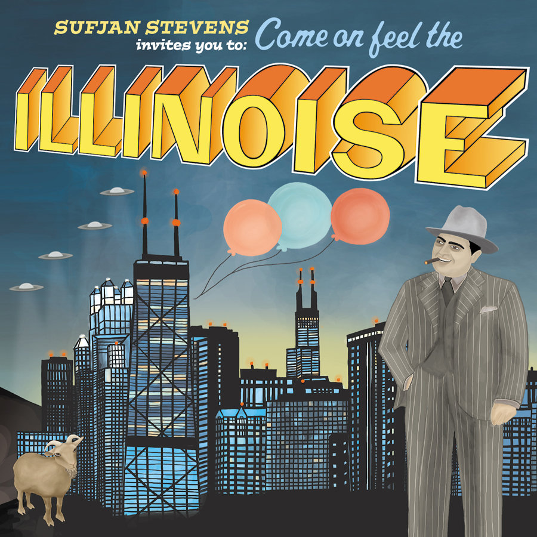
1. Casimir Pulaski Day
2. The Predatory Wasp of the Palisades Is Out to Get Us!
3. John Wayne Gacy Jr.
4. Chicago
the same minimalistically raw and beautiful instrumentals and vocals of carrie & lowell but perhaps a bit lighter and happier, young love, a gentle sense of hopefulness
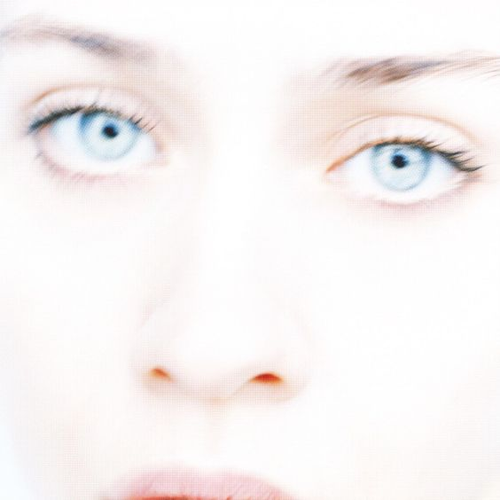
1. never is a promise
2. sleep to dream
3. criminal
4. sullen girl
the most powerful soulful vocals, learning every lyric akin to learning the bible, perfectly esoteric mix of jazz rock and a touch of pop, sweet sweet unapologetic misandry
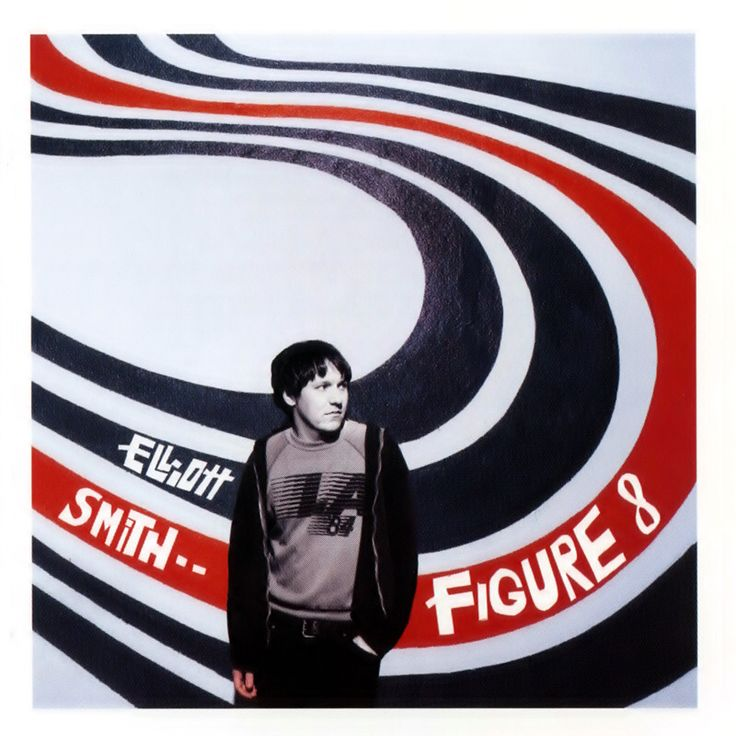
1. Everything Means Nothing To Me
2. Easy Way Out
3. Somebody That I Used To Know
4. Son Of Sam
first introduced me to elliott smith so perhaps a touch of nostalgia, used to be able to study to it but not anymore, bittersweet love and hopelessness, gentle whispery vocals that make every lyric feel like a personal confession
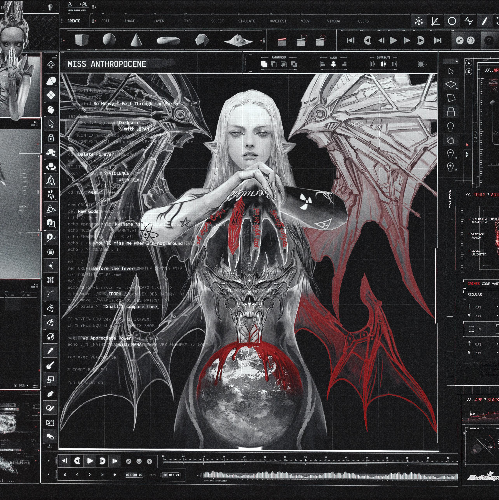
1. 4AM
2. We Appreciate Power
3. Violence
4. New Gods
being camp, telling yourself you're a robot, being like the modern day happier higher energy version of cocteau twins, ethereal vocals
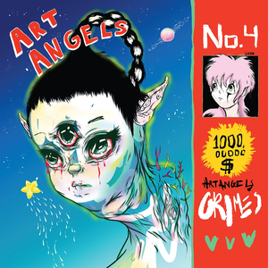
1. Kill V Maim
2. Artangels
3. Venus Fly
4. Flesh Without Blood
being camp, a slight touch of delusion and recklessness, walking through the streets feeling like a teenage girl without a care in the world, i feel like this album would look like a kaleidoscope
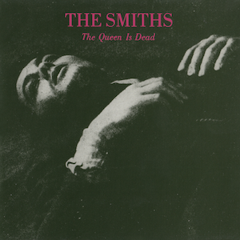
1. the queen is dead
2. bigmouth strikes again
3. frankly, mr shankly
4. there is a light that never goes out
having the realest title ever, having the best dry & witty lyrics, sprightliness, having some utterly miserable songs but i can't imagine being miserable listening to them, vivid memories of singing "there is a light that never goes out" with my friends in the streets "if a double decker bus crashes into us"
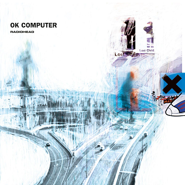
1. No Surprises
2. Paranoid Android
3. Karma Police
4. Subterranean Homesick Alien
what can i say, it's literally radiohead ok computer it's perfect and a masterpiece
1. 365
2. Everything is romantic
3. Club classics
4. Girl, so confusing
i will not let the commercialisation of BRAT outside the original intended audience ruin this. this album was exactly what i needed at the right time by getting me through the end of exam season using a sort of anticipation for the upcoming summer and start of uni
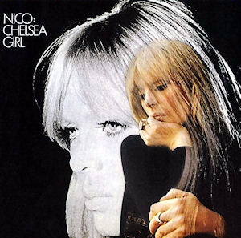
1. The Fairest Of The Seasons
2. These Days
3. Chelsea Girls
4. I'll Keep It With Mine
that one scene in the royal tenenbaums, meeting old friends, sitting on a delayed busy plane on the way home from a holiday that you know you'll keep on thinking about later
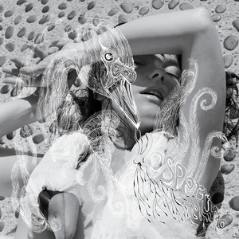
1. Pagan Poetry
2. Hidden Place
3. It's Not Up To You
4. Cocoon
staying awake during exam season, richness and beautiful thick layers of detail
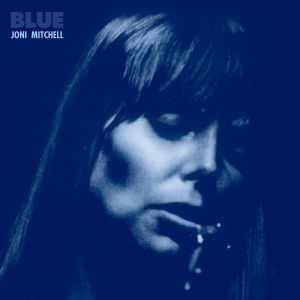
1. All I Want
2. Little Green
3. California
4. Blue
being introspective, walking through fields with tall grass
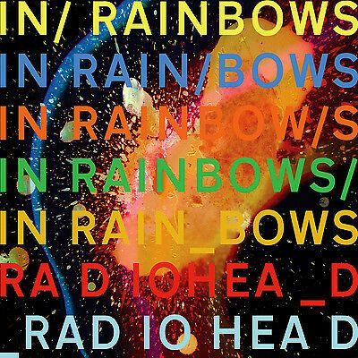
1. all i need
2. faust arp
3. 15 step
4. weird fishes/arpeggi
studying, finishing assignments the night before they're due, but also getting ready to go on a night out with friends, beautiful underapperciated almost glorious instrumentals, i think this is such a versatile album hence why it was my most listened in 2023 and i think it encapsulates my 2023 pretty well as a year
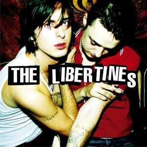
1. Music When The Lights Go Out
2. Can't Stand Me Now
3. What Katie Did
4. Arbeit Macht Frei
walking down the street at 2x speed overtaking every single person, would be amazing live, would also be amazing at a houseparty, kind of radiates the quintessential getting drunk in a field british experience talking to new people and not caring about anything else but the moment you're living in
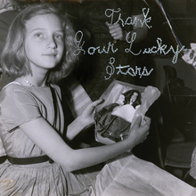
1. She's So Lovely
2. Elegy to the Void
3. Somewhere Tonight
4. Majorette
slow breaths, small soft moments held in stasis, slow motion, spiralling/spinning, "Sons and daughters/ Bending at the altar/ Disappearing in the mirror", but better things are to come, current listening on repeat whilst studying for a subject i enjoy during break under a lack of particular stress
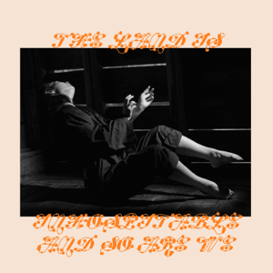
1. Bug Like an Angel
2. My Love Mine All Mine
3. The Deal
4. When Memories Snow
beautifully conveying the idea that we are on this planet to love, warmth and intimacy, open but comfortable vunerability, i think this is my favourite mitski album; i love every song & they each add something slightly different creating a perfect mix w no skips
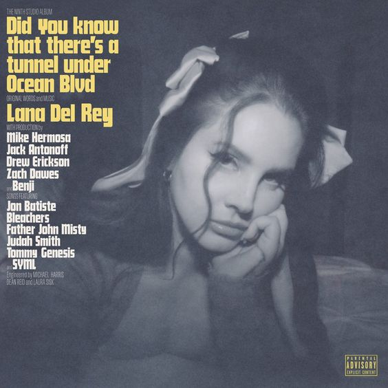
1. ocean blvd
2. A&W
3. Candy Necklace
4. Let the Light In
hauntingly beautiful muted piano, long quiet walks through the streets, deep breaths, quintessential lana del rey lyrics
saw live summer 2023, incredible experience
1. Paradise
2. Kiss of Life
3. Smooth Operator
4. The Sweetest Taboo
silky smooth vocals, floating light jazz tones, small intimate house parties
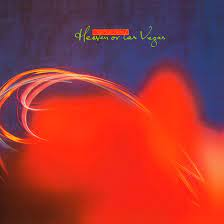
1. Heaven or Las Vegas
2. Cherry-coloured Funk
3. Frou-Frou Foxes in Midsummer Fires
4. Pitch the Baby
a cacophony of shimmery instrumental atmosphere, metamorphosis, soundtrack to downing but drowning in a flowery koi fish pond perhaps painted by van gogh but a little bit more psychedelic, soft and overwhelming at the same time
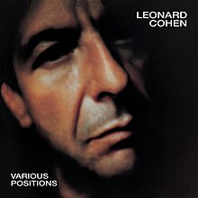
1. Dance Me to the End of Love
2. The Law
3. Hallelujah
4. Hunter's Lullaby
feeling your soul, feeling comforted & completely at rest, long slow relationships
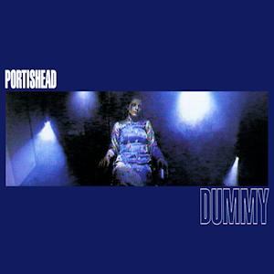
1. Sour Times
2. Glory Box
3. Mysterons
4. Roads
mesmerising soundscapes, feeling beautiful and mysterious on a foggy dark night, clean breathy vocals with a slight sense of fragility, intricate attention to detail
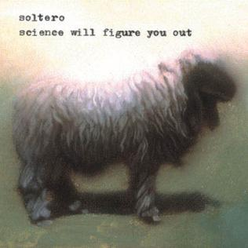
1. communist love song
2. the priest
3. laundrydaydreams
4. i am sitting in a room
"i will be your berlin wall and i will never fall", gentle and simple hopelessness, things coming to an end, yearning
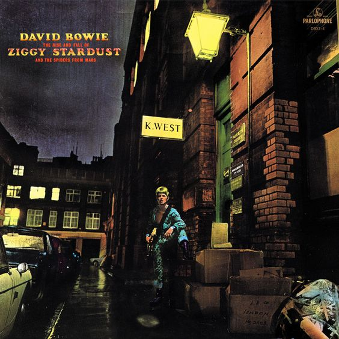
1. Starman
2. Moonage Daydream
3. Five Years
4. Suffragette City
david bowie, i love david bowie, feeling like a real person, smiling grinning being happy and carefree with friends singing along to the music, being culturally revolutionary as i think his work will forever be unparalleled
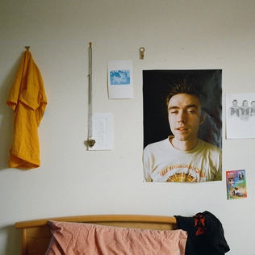
1. Jupiter
2. Curl up & Die
3. When You Wash Your Hair
4. Krystal
rotting in your room, "curl up and die" in a warm bed, desolation, gentle homely comfortable instrumentation, a sense of conclusion or perhaps indicating a new chapter
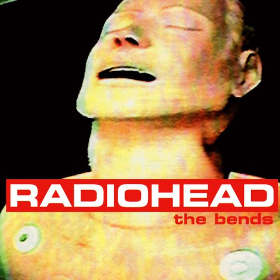
1. Just
2. Fake Plastic Trees
3. Street Spirit (Fade Out)
4. Black Star
"YOU DO IT TO YOURSELF", walking down the street at 2x speed overtaking every single person but in self hatred at the same time, getting ready to go out, incredible guitar work to be intricately appreciated
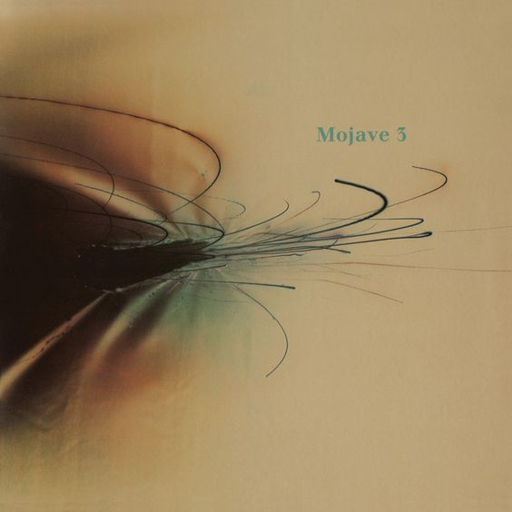
1. Love Songs On The Radio
2. Mercy
3. Where Is The Love
4. Tomorrow's Taken
being sad but a warm lonely type of sad, studying in that aforementioned sadness, no longer being sad and just feeling warm and at home, autumn
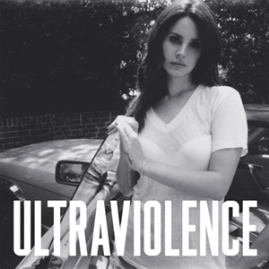
1. Ultraviolence
2. Pretty When You Cry
3. Old Money
4. Cruel World
theatrical melancholy, "I'm churning out novels like Beat poetry on amphetamines", new york city (i've never been to new york city)
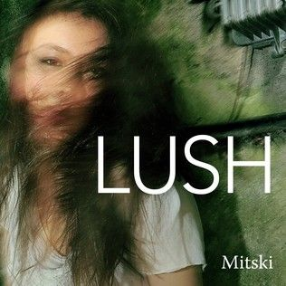
1. Liquid Smooth
2. Pearl Diver
3. Brand New City
4. Bag Of Bones
i remember listening to liquid smooth for the first time and being in utter awe, simply sitting and appreciating in tortured anguish (in a beautiful way), gorgeous raw vocals, heartbreakingly beautiful, probably the most impressive debut album ever
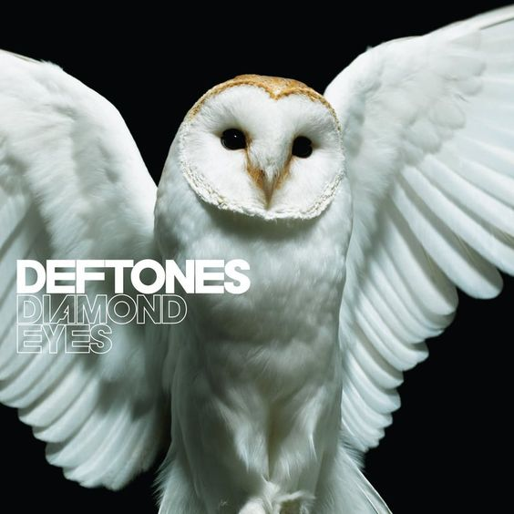
1. Sextape
2. Beauty School
3. 967-Evil
4. Risk
first introduced me to ... metal? deftones-esque rock? wikipedia says shoegaze but ??? i don't think so, getting ready for a party, feelings of power
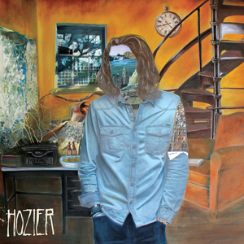
1. take me to church
2. angel of small death and the codeine scene
3. like real people do
4. cherry wine
godliness, meaningful and devastatingly gorgeous lyricism, feeling like your soul is physically open and in another world
saw live summer 2023
saw with my best friend and i think it was one of the most incredible and beautiful nights of my life